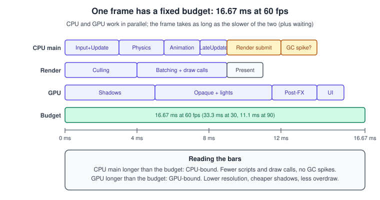
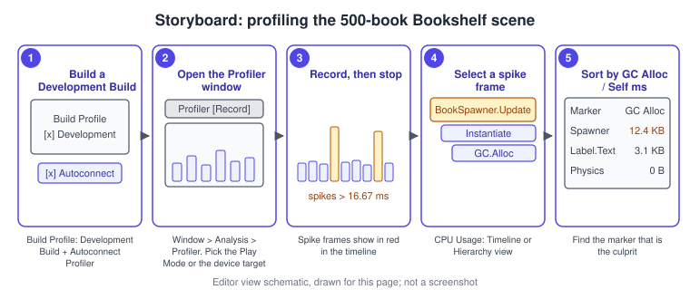
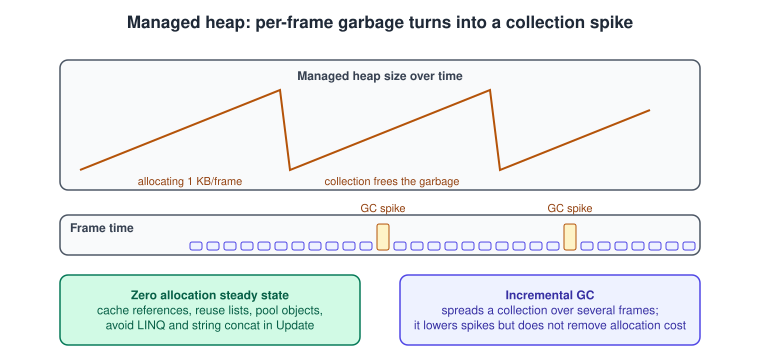
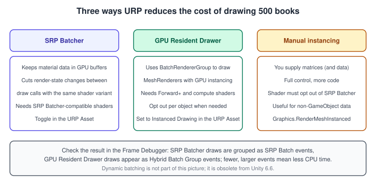
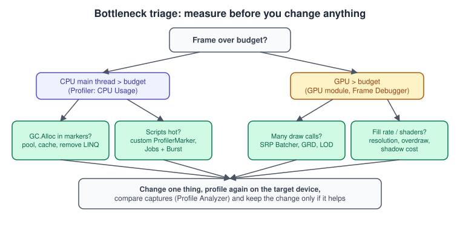

Profiling and Optimization
|
This content was generated with the assistance of AI and should be verified against the official documentation before being relied on in production. |
A game that runs at 90 frames per second on the developer’s machine and at 20 on the target phone is a very common story, and the cure is almost never a clever trick: it is a measurement. Unity ships a set of analysis tools that show where the time and the memory of every frame go, and the discipline of optimization is to use them in a fixed order: measure, find the one thing that dominates, change it, measure again. This page teaches that loop on the Bookshelf project: a scene with 500 books, a spawner that is deliberately wasteful, and the fixes, one at a time.
The facts were checked in November 2026. The page documents Unity 6.3 LTS (6000.3) with the Universal Render Pipeline
(URP) 3D template and the Input System, and notes what Unity 6.6 changes where it matters. The Profiler, the Frame
Debugger and the managed memory pages are part of the Unity manual; the Memory Profiler, Project Auditor, Profile
Analyzer, Profiling Core and Performance Testing tools are packages installed from the Package Manager. The editor
procedures work on Windows, macOS and Linux; the profiled target can be the Editor or a development build on any
platform. This is the "500-book profiling scene" stage of the running example: the shelf from
Prefabs and Scenes, the Book prefab, and the shared
bookshelf.glb model imported once and instanced many times.
The general theory of frame time, CPU and GPU bottlenecks is in Performance and Profiling; this page is the Unity tool kit that implements it. The matching pages in the other sub-sections are OpenGL Debugging and Tools and Metal Debugging and Profiling.
The frame budget
Every frame has a fixed time budget set by the target frame rate. The budget in milliseconds is \( 1000 / f \) for a rate of \( f \) frames per second: about 16.67 ms at 60 fps, 33.3 ms at 30 fps and 11.1 ms at 90 fps (the usual VR target). The CPU and the GPU work in parallel on different frames, so the frame takes as long as the slower of the two plus any time one spends waiting for the other. Optimization starts by finding which side is the slower one.

Three words describe what the Profiler shows:
-
CPU-bound: the main thread (scripts, physics, animation, UI) or the render thread (culling, batching, submitting draw calls) takes longer than the budget, and the GPU waits. Typical causes are too many scripts doing work every frame, too many draw calls, and garbage collection spikes.
-
GPU-bound: the GPU takes longer than the budget. Typical causes are a resolution that is too high for the device, expensive shadows or post-processing, heavy fragment shaders and overdraw.
-
Waiting: frame time that is neither work on the CPU nor on the GPU, mostly VSync or an explicit frame cap.
Application.targetFrameRateandQualitySettings.vSyncCountcontrol this; a frame that "takes 16.6 ms" with VSync on may in fact be doing 4 ms of work and waiting for the display.
using UnityEngine;
namespace Bookshelf.Diagnostics
{
/// <summary>
/// Frame pacing for profiling sessions: turn VSync off and cap the frame rate
/// explicitly, so the Profiler shows the real cost of each frame instead of the wait.
/// </summary>
public sealed class FramePacing : MonoBehaviour
{
[SerializeField] private int targetFrameRate = 60;
[SerializeField] private bool disableVSync = true;
private void Awake()
{
if (disableVSync)
{
QualitySettings.vSyncCount = 0;
}
Application.targetFrameRate = targetFrameRate;
}
}
}Set the cap deliberately rather than trusting the platform default, and profile on the device you ship to. The numbers from an Editor Play session include Editor overhead (the Inspector, the Scene view and Editor-only code) and are always pessimistic compared with a build.
The Profiler
The Profiler records performance data for the Editor, for the application in Play mode or for a development build
running on a device, and shows it in a window opened with Window > Analysis > Profiler. It is instrumentation-based:
the engine and your code write markers (a name, a start and an end time) around sections of work, and the Profiler
displays the markers. Unity’s own API is full of built-in markers (Update, FixedUpdate, Physics.Simulate,
Camera.Render, …), and you add custom markers around your own work.
Profiling a build, not only the Editor
The Editor is the quickest place to start, and the least reliable. For numbers that mean something, profile a development build with the Profiler connected, on the target device. The Bookshelf procedure below uses the Build Profiles window of Unity 6 (see Build Profiles and Platforms).
-
Open the Build Profiles window (File > Build Profiles) and select the platform profile for your target (for example Windows, macOS or Android).
-
Enable Development Build and Autoconnect Profiler in the profile’s platform settings. A development build contains the profiling markers and the connection code; a release build does not.
-
Choose Build And Run, or build and start the player on the device.
-
In the Editor, open Window > Analysis > Profiler. If the build did not connect on its own, use the target dropdown at the top of the window to pick the running player (or Play Mode for the Editor).
-
Press Record (the red circle), play through the slow part of the scene (spawn the books, open the menu), then press Record again to stop.
-
Look at the timeline for frames that rise above the budget line, click one, and switch the CPU Usage module to the Hierarchy view. Sort by Total or by GC Alloc to find the expensive marker.

The Profiler can also capture over a long session, load a saved capture file (.data) and, with a standalone Profiler
process, record without the overhead of the Editor UI. The manual covers the standalone process and the command-line
arguments for starting a capture automatically from a build or a CI job.
Modules
The top of the Profiler window lists modules, each showing one area as a chart. The ones used most:
| Module | What it tells you |
|---|---|
CPU Usage |
Time per frame on the main thread and on worker threads: Timeline view (what ran when, on which thread) and Hierarchy view (a tree of markers with Total, Self, Calls and GC Alloc columns). |
GPU Usage |
GPU time per frame where the platform and graphics API support it. Needs a supported GPU and driver; not available everywhere. |
Rendering |
Batches, draw calls, SetPass calls, triangles and vertices per frame. The first stop for "too many draw calls". |
Memory |
Total, managed and native memory by category, and a link to take a snapshot with the Memory Profiler package. |
Physics, Audio, UI and others |
Counters specific to those systems, for example physics contact counts or audio voice usage. |
Source: Unity manual: Profiler modules
The two columns of the Hierarchy view to read first are Total (the marker and everything below it) and Self (the marker alone). A marker with high Total and low Self is a container: dig into its children. A marker with high Self is the place where the time is actually spent.
Custom markers
Built-in markers stop at the engine boundary: a single BookSpawner.Update shows as one slow scope. Wrap the
interesting parts of your own code in ProfilerMarker scopes to split it. ProfilerMarker is a struct from
Unity.Profiling; create it once, as a static readonly field, then wrap the work in Auto() with a using
statement. It is allocation-free, and in a release build the calls compile away.
using Unity.Profiling;
using UnityEngine;
namespace Bookshelf.Diagnostics
{
/// <summary>Spawns books each frame, with markers around each phase so the Profiler can split the cost.</summary>
public sealed class WastefulBookSpawner : MonoBehaviour
{
private static readonly ProfilerMarker PlaceMarker = new ProfilerMarker("Bookshelf.PlaceBooks");
private static readonly ProfilerMarker LabelMarker = new ProfilerMarker("Bookshelf.UpdateLabels");
[SerializeField] private GameObject bookPrefab;
[SerializeField] private int booksPerShelf = 50;
[SerializeField] private Transform[] shelves;
private void Update()
{
using (PlaceMarker.Auto())
{
// Deliberately wasteful: instantiates new books every frame (fixed later by pooling).
foreach (Transform shelf in shelves)
{
for (int i = 0; i < booksPerShelf; i++)
{
Vector3 position = shelf.position + new Vector3(i * 0.04f, 0f, 0f);
Instantiate(bookPrefab, position, Quaternion.identity, shelf);
}
}
}
using (LabelMarker.Auto())
{
// Deliberately wasteful: string concatenation allocates every frame.
string label = "Books: " + transform.childCount + " at " + Time.time;
Debug.Log(label);
}
}
}
}Source: Scripting API: ProfilerMarker
The older Profiler.BeginSample(string) and Profiler.EndSample() pair in UnityEngine.Profiling still works, but
takes a string on every call and needs a matching EndSample on every path, including exceptions. Prefer
ProfilerMarker in new code.
Recorders: reading counters from code
ProfilerRecorder reads a marker or a counter at runtime, in a development build or a release build, so a game can
show a live frame time or draw-call count in its own debug HUD, or a test can assert on it.
using System.Text;
using Unity.Profiling;
using UnityEngine;
namespace Bookshelf.Diagnostics
{
/// <summary>A tiny on-screen stats overlay built on ProfilerRecorder.</summary>
public sealed class StatsOverlay : MonoBehaviour
{
private ProfilerRecorder mainThreadTime;
private ProfilerRecorder drawCalls;
private ProfilerRecorder gcMemory;
private readonly StringBuilder text = new StringBuilder(128);
private GUIStyle style;
private void OnEnable()
{
mainThreadTime = ProfilerRecorder.StartNew(ProfilerCategory.Internal, "Main Thread", 15);
drawCalls = ProfilerRecorder.StartNew(ProfilerCategory.Render, "Draw Calls Count");
gcMemory = ProfilerRecorder.StartNew(ProfilerCategory.Memory, "GC Reserved Memory");
}
private void OnDisable()
{
mainThreadTime.Dispose();
drawCalls.Dispose();
gcMemory.Dispose();
}
private static double Average(ProfilerRecorder recorder)
{
if (!recorder.Valid || recorder.Count == 0)
{
return 0;
}
double sum = 0;
for (int i = 0; i < recorder.Count; i++)
{
sum += recorder.GetSample(i).Value;
}
return sum / recorder.Count;
}
private void OnGUI()
{
if (style == null)
{
style = new GUIStyle(GUI.skin.label) { fontSize = 16 };
}
text.Clear();
text.Append("Main thread: ").Append((Average(mainThreadTime) * 1e-6).ToString("F1")).Append(" ms\n");
text.Append("Draw calls: ").Append(drawCalls.LastValue).Append('\n');
text.Append("GC reserved: ").Append(gcMemory.LastValue / (1024 * 1024)).Append(" MB");
GUI.Label(new Rect(10, 10, 360, 80), text.ToString(), style);
}
}
}Source: Scripting API: ProfilerRecorder
The counter names come from the Profiler counters reference page of the manual. A counter that does not exist on a
platform returns an invalid recorder (Valid is false) rather than throwing, so check Valid in code that ships. The
overlay above uses OnGUI for brevity in a debug tool; production HUDs use
UI Toolkit.
Deep Profiling and its costs
Deep Profiling instruments every managed method call, not only the marked ones. It shows exactly which C# function is slow, at the price of a large overhead (often several times slower), so the absolute times are wrong and the frame rate collapses. Use it on a small reproduction, never on the whole game, and compare relative sizes only. The better habit is to add custom markers to the suspect code and leave Deep Profiling off.
Source: Unity manual: Deep Profiling
The Frame Debugger
The Frame Debugger (Window > Analysis > Frame Debugger) freezes one frame and lets you step through its draw calls one at a time, seeing each call’s render target, shader, keywords and properties. It answers "why is this rendered twice?", "why did these two meshes not batch?" and "which pass draws the shadows?".
-
Open Window > Analysis > Frame Debugger and press Enable while the game runs in the Editor (the Game view must be visible).
-
In the event list on the left, expand the render passes of the frame. In URP they appear under the renderer’s passes (opaque, shadow, transparent, post-processing).
-
Click the first draw event of the books. The right panel names the shader, the pass and the reason Unity could not merge this draw with the previous one (for example a different material or an incompatible shader).
-
Compare the number of events before and after you make the change (enable the SRP Batcher, enable GPU Resident Drawer, share one material). Fewer, larger events mean fewer CPU-side draw submissions.
Source: Unity manual: Frame Debugger
The Frame Debugger shows what the CPU submits, not how long the GPU takes. For GPU time, use the Profiler’s GPU module where supported, and a platform tool (RenderDoc, Xcode’s Metal debugger, Android GPU Inspector, NVIDIA Nsight Graphics, PIX) for per-pass GPU cost; the manual lists these in its profiling tools reference.
Memory
Unity has three kinds of memory, and each fails differently:
-
Managed memory: the heap used by C# objects, reclaimed by the garbage collector. Too much allocation causes collection pauses.
-
Native memory: the engine’s own allocations (textures, meshes, audio clips, scenes). Too much of it causes out-of-memory kills on devices, and no garbage collector helps.
-
Unmanaged C# memory: allocations made through
Unity.Collectionsand similar native containers, freed by hand.
The Profiler’s Memory module gives totals. The Memory Profiler package takes a snapshot of everything in memory and lets you inspect it, compare two snapshots (take one before and one after loading a level to find what leaked) and see which objects reference which. Install it from the Package Manager (Window > Package Manager, Unity Registry) and open it from Window > Analysis > Memory Profiler.
The garbage collector
C# objects live on the managed heap. Unity runs the garbage collector when a script tries to allocate and there is no free block large enough: it finds the objects nothing references any more, frees them and reuses the space; if that is not enough, the heap grows. Collecting costs time proportional to the amount of live managed data, and in the default mode all of that time lands in one frame as a spike, the "hitch" players notice as a stutter.

The goal in a game is zero managed allocation per frame in steady state. The manual’s own example is worth remembering: 1 KB of garbage per frame at 60 fps is 60 KB per second and 3.6 MB per minute, and all of it is collected eventually. Unity also supports an incremental garbage collector that splits a collection across several frames to shorten the spike; it reduces the hitch but not the allocation cost, and the manual’s pages on garbage collection modes and configuration describe the settings.
The usual sources of per-frame allocation in game code, with the replacement:
| Allocating pattern | Allocation-free replacement |
|---|---|
|
Create the collection once as a field and |
String concatenation, |
Update the text only when the value changes, or format into a reused |
|
Cache the yield instruction in a field, or use |
|
The |
Boxing (value types converted to |
Generic methods and delegates without captures; see the C# page Memory Management and Disposal. |
|
An object pool, shown below. |
|
Cache the reference in |
using System.Text;
using UnityEngine;
namespace Bookshelf.Diagnostics
{
/// <summary>Picks the book under the cursor each frame without allocating.</summary>
[RequireComponent(typeof(Camera))]
public sealed class AllocationFreePicker : MonoBehaviour
{
private const int MaxHits = 8;
[SerializeField] private LayerMask bookLayer = ~0;
[SerializeField] private float maxDistance = 20f;
private readonly RaycastHit[] hits = new RaycastHit[MaxHits];
private readonly StringBuilder label = new StringBuilder(64);
private Camera cachedCamera;
private int lastBookId = -1;
public string Label => label.ToString();
private void Awake()
{
cachedCamera = GetComponent<Camera>();
}
public void Pick(Vector2 screenPosition)
{
Ray ray = cachedCamera.ScreenPointToRay(screenPosition);
int count = Physics.RaycastNonAlloc(ray, hits, maxDistance, bookLayer);
int best = -1;
float bestDistance = float.MaxValue;
for (int i = 0; i < count; i++)
{
if (hits[i].distance < bestDistance)
{
bestDistance = hits[i].distance;
best = i;
}
}
if (best < 0)
{
return;
}
int id = hits[best].collider.gameObject.GetInstanceID();
if (id == lastBookId)
{
return; // only rebuild the label when the picked book changes
}
lastBookId = id;
label.Clear();
label.Append(hits[best].collider.name).Append(" (").Append(bestDistance.ToString("F1")).Append(" m)");
}
}
}The Project Auditor package (installed from the Package Manager) analyzes the project’s scripts, assets and settings
without running the game and reports issues, among them code that allocates in Update. It is a static check, good as
a first pass and in CI; it does not replace profiling because it cannot tell which finding actually matters at runtime.
Object pooling
Instantiate and Destroy are expensive: they allocate, run Awake and OnEnable on the new object, build its
components and leave garbage behind. A game that spawns and destroys many short-lived objects (falling books in
"Shelve-it", bullets, particles) should reuse them: an object pool creates the objects up front, hands one out when
needed and takes it back when done. Unity includes a ready-made pool in UnityEngine.Pool: ObjectPool<T>, the
collection pools (ListPool<T>, HashSetPool<T>, DictionaryPool<TKey, TValue>) and LinkedPool<T>.
The pool is configured with four callbacks and two limits:
| Parameter | Meaning |
|---|---|
|
Builds a new instance when the pool is empty. |
|
Runs when an instance is taken out; typically |
|
Runs when an instance is returned; typically |
|
Runs when the pool discards an instance because it is over |
|
When true (use it in the Editor), the pool throws if the same instance is released twice. |
|
The initial size of the internal stack and the number of released instances the pool keeps. |
using UnityEngine;
using UnityEngine.Pool;
namespace Bookshelf.Gameplay
{
/// <summary>A falling book that returns itself to the pool when it lands or leaves the room.</summary>
[RequireComponent(typeof(Rigidbody))]
public sealed class PooledBook : MonoBehaviour
{
private IObjectPool<PooledBook> pool;
private Rigidbody body;
public void Init(IObjectPool<PooledBook> owner)
{
pool = owner;
body = GetComponent<Rigidbody>();
}
public void ResetState(Vector3 position)
{
transform.SetPositionAndRotation(position, Random.rotation);
body.linearVelocity = Vector3.zero;
body.angularVelocity = Vector3.zero;
}
private void OnTriggerEnter(Collider other)
{
if (other.CompareTag("ReturnSlot"))
{
pool.Release(this);
}
}
}
/// <summary>Drops pooled books from above the shelf; no Instantiate or Destroy after warm-up.</summary>
public sealed class BookDropper : MonoBehaviour
{
[SerializeField] private PooledBook bookPrefab;
[SerializeField] private int defaultCapacity = 50;
[SerializeField] private int maxSize = 200;
[SerializeField] private float interval = 0.4f;
[SerializeField] private Vector2 dropArea = new Vector2(1.5f, 0.5f);
private ObjectPool<PooledBook> pool;
private float nextDrop;
private void Awake()
{
pool = new ObjectPool<PooledBook>(
createFunc: () =>
{
PooledBook book = Instantiate(bookPrefab, transform);
book.Init(pool);
return book;
},
actionOnGet: book => book.gameObject.SetActive(true),
actionOnRelease: book => book.gameObject.SetActive(false),
actionOnDestroy: book => Destroy(book.gameObject),
collectionCheck: true,
defaultCapacity: defaultCapacity,
maxSize: maxSize);
}
private void Update()
{
if (Time.time < nextDrop)
{
return;
}
nextDrop = Time.time + interval;
PooledBook book = pool.Get();
Vector3 offset = new Vector3(
Random.Range(-dropArea.x, dropArea.x), 0f, Random.Range(-dropArea.y, dropArea.y));
book.ResetState(transform.position + offset);
}
}
}Source: Scripting API: ObjectPool<T>
A pool trades memory (the idle objects stay allocated) for time, and it moves a bug class from "forgot to destroy" to
"forgot to reset": every field the object had when it was returned is still there when it is handed out again, so
actionOnGet or a ResetState method must restore everything. See also the Object Pool pattern in
Project Architecture and Design Patterns.
Pooling is also the right answer for temporary collections: ListPool<T>.Get(out List<T> list) returns a cleared list
to a scope and gives it back on Dispose, which removes the new List<T>() from the table above.
Source: Scripting API: ListPool<T>
Rendering cost in URP
When the Profiler’s CPU view shows the render thread or Camera.Render as the dominant cost, or the Rendering module
shows thousands of batches, the cause is usually the number of draw calls and the state changes between them. URP has
three tools that reduce the CPU cost of drawing many objects, and they work on different assumptions.

The SRP Batcher
The SRP Batcher does not reduce the number of draw calls; it reduces the render-state changes between them. It keeps
each material’s data in a persistent GPU buffer and each object’s transform data in a per-object buffer, so a draw
call that uses the same shader variant as the previous one needs only a small update instead of rebinding everything.
A shader is compatible when it declares all of its per-material properties (except textures) in a single
UnityPerMaterial constant buffer; URP’s Lit and Unlit shaders and Shader Graph shaders are compatible, and the
Inspector of a shader shows whether it is. It is enabled in the URP Asset (under Advanced Properties).
A MaterialPropertyBlock on a renderer takes it out of the SRP Batcher path and so does a custom shader that is not
compatible; to get per-book colours, prefer separate materials (cheap in the SRP Batcher, because they share a shader
variant) or per-instance data through a different mechanism. The troubleshooting page uses the Frame Debugger to show
why a draw was not batched.
The GPU Resident Drawer
The GPU Resident Drawer uses the BatchRendererGroup API to draw MeshRenderer GameObjects with GPU instancing
automatically, which cuts draw calls and frees CPU time in scenes with many repeated meshes: exactly the 500 books.
Its requirements in Unity 6.3:
-
The Forward+ rendering path (other paths are not supported).
-
A graphics API and platform that support compute shaders, except OpenGL ES.
-
GameObjects with a Mesh Renderer component; other renderers fall back to ordinary drawing.
-
Shaders that support DOTS instancing (the URP Lit family does), static global illumination rather than real-time, and no use of Light Probes set to Use Proxy Volume.
-
No
MaterialPropertyBlockon the renderer and no per-instance callback such asOnRenderObject. -
Build times grow, because Unity compiles all the BatchRendererGroup shader variants into the build.
-
Open Project Settings > Graphics. In the Shader Stripping section set BatchRendererGroup Variants to Keep All.
-
Select the active URP Asset and make sure SRP Batcher is enabled (open the More menu and choose Show All Advanced Properties if the setting is hidden).
-
In the URP Asset set GPU Resident Drawer to Instanced Drawing.
-
In the URP Asset’s Renderer List, double-click the renderer and set Rendering Path to Forward+.
-
Optional: in Project Settings > Player > Other Settings disable Static Batching, which the manual says can speed up the drawer.
-
Enter Play mode (or build) and open the Frame Debugger; the books now appear in draw calls named Hybrid Batch Group. Check the effect with the Rendering Statistics and the Profiler’s CPU time.
To keep an object out of the drawer (an object that a script moves between one camera finishing and the next starting, for example), add the Disallow GPU Driven Rendering component to it; tick Apply to Children Recursively to cover its children.
The manual’s page "Choose a method for optimizing draw calls" helps pick between the SRP Batcher, the GPU Resident Drawer, the BatchRendererGroup API and manual instancing for a given scene. Dynamic batching, the older CPU-side method of merging small meshes, does not appear in this list because it is obsolete from Unity 6.6.
Generating the test scene
The profiling scene itself should be reproducible. This component builds 500 books in a grid at startup from the prefab, using three shared materials rather than a property block per book, so that both the SRP Batcher and the GPU Resident Drawer can batch them.
using UnityEngine;
namespace Bookshelf.Diagnostics
{
/// <summary>Builds a 500-book stress scene (10 shelves of 50 books) for profiling.</summary>
public sealed class BookStressScene : MonoBehaviour
{
[SerializeField] private GameObject bookPrefab;
[SerializeField] private Material[] coverMaterials; // three shared materials
[SerializeField] private int shelves = 10;
[SerializeField] private int booksPerShelf = 50;
[SerializeField] private float bookSpacing = 0.045f;
[SerializeField] private float shelfSpacing = 0.4f;
private void Start()
{
for (int s = 0; s < shelves; s++)
{
for (int b = 0; b < booksPerShelf; b++)
{
Vector3 position = transform.position + new Vector3(b * bookSpacing, s * shelfSpacing, 0f);
GameObject book = Instantiate(bookPrefab, position, Quaternion.identity, transform);
Renderer renderer = book.GetComponentInChildren<Renderer>();
renderer.sharedMaterial = coverMaterials[(s + b) % coverMaterials.Length];
}
}
}
}
}Culling and level of detail
Fewer visible triangles and fewer drawn objects help both CPU and GPU. Unity’s LOD Group component swaps a mesh for a simpler one as it gets smaller on screen. Frustum culling (objects outside the camera view) is automatic; occlusion culling (objects hidden behind others) needs baked data or, in URP with the GPU Resident Drawer, GPU occlusion culling. For the Bookshelf, the books on a far shelf use a quad-and-spine LOD while the foreground shelf uses the full mesh.
Source: Unity manual: Optimize mesh rendering using level of detail and Unity manual: Enable GPU occlusion culling in URP
More on the pipeline itself is in Render Pipelines Overview and URP in Depth; the general idea of a draw call and the reasons for batching are in The Rendering Pipeline.
Comparing captures and guarding budgets
A fix that "feels faster" is not proof. Profile Analyzer (a package) loads two sets of frames, a before and an
after capture, and compares the median and the spread of each marker, so a change can be judged on numbers. The
Performance Testing package (com.unity.test-framework.performance) goes further: it records frame times and
markers inside automated tests so a regression fails the build; it is covered in
Testing and CI.
The optimization loop that this page keeps returning to, as a diagram:

Common mistakes
-
Optimizing without measuring. Rewriting the loop that "looks slow" while the Profiler would have shown the time in the render thread. Always record first.
-
Profiling the Editor and trusting the numbers. The Editor adds its own cost; check a development build on the target device before and after.
-
Leaving Deep Profiling on. It distorts every number; use custom
ProfilerMarkerscopes instead. -
Measuring with VSync on. The frame appears to cost 16.6 ms; the real work may be far less. Turn VSync off while profiling and cap the frame rate yourself.
-
Reading GC.Alloc only in the frame it shows. A small allocation per frame is invisible until the collection. Sort the Hierarchy view by GC Alloc and look for any non-zero rows in steady state.
-
Using a
MaterialPropertyBlockfor per-object colour. It removes the renderer from the SRP Batcher and from the GPU Resident Drawer. Use separate materials or a shader that reads per-instance data. -
Enabling the GPU Resident Drawer without Forward+ (or on OpenGL ES): the setting is silently ineffective. Check the Frame Debugger for Hybrid Batch Group events.
-
Pooling without resetting. A pooled book that still has its old velocity is a bug, not a speed-up.
-
Collecting the same pool item twice. Use
collectionCheck: truein the Editor; it throws on a double release. -
Fixing the CPU when the GPU is the limit. If lowering the resolution makes the frame faster, the game is GPU-bound and script changes will not help.
Performance notes
-
Aim for zero managed allocations per frame in steady state, and measure it: the Hierarchy view’s GC Alloc column should be empty for the frames that matter.
-
Move per-frame work out of
Updatewhen it does not change every frame; use events, timers or a lower-frequency update. -
For heavy per-object work, the Job System with Burst moves it off the main thread; see DOTS: ECS, Jobs and Burst.
-
Texture memory is often the largest native allocation: compress textures for the platform and cap their size per platform; see Build Profiles and Platforms and Assets, Addressables and Content for loading and unloading content.
-
Physics costs grow with the number of active bodies and contacts; see 3D Physics.
-
On mobile and standalone XR, thermal throttling lowers the clocks after a few minutes: test a sustained session, not a 30-second run.
What changed recently
| Version | Change relevant to this page |
|---|---|
Unity 6.0 |
Build Profiles replace Build Settings; URP renders through the Render Graph system by default. |
Unity 6.3 LTS |
The documented version. GPU Resident Drawer and GPU occlusion culling are documented under URP; the manual’s profiling pages live under Optimization in the manual’s navigation. |
Unity 6.4 |
Compatibility Mode (the non-Render Graph path) is removed from URP. |
Unity 6.5 |
The Built-in Render Pipeline is deprecated; obsolete accessors removed. |
Unity 6.6 |
Dynamic batching is obsolete; a Build Analysis window is added; new projects use "Reload Scene only" when entering Play mode, so Play mode starts faster. |
Where the books are outdated
Game Development Patterns with Unity 2021 (GDP) presents object pooling in chapter 8 as a recently added Unity
feature. The wording is dated rather than wrong: UnityEngine.Pool (ObjectPool<T>, ListPool<T> and the others) is
now the standard, supported way to pool in Unity, and the page above uses it instead of a hand-written pool. The same
chapter’s pattern (pre-create, hand out, take back, reset) is unchanged. Neither GDP nor Unity in Action covers the
Profiler’s current windows, the Memory Profiler, Project Auditor, Profile Analyzer or the GPU Resident Drawer, so for
those the manual pages cited here are the reference.
References
-
Unity manual, Profiler: https://docs.unity.com/en-us/engine/6000.3/manual/analysis/profiler
-
Unity manual, Memory in Unity: https://docs.unity.com/en-us/engine/6000.3/manual/analysis/performance-memory
-
Unity manual, Graphics performance and profiling: https://docs.unity.com/en-us/engine/6000.3/manual/analysis/graphics-performance-profiling
-
Unity manual, Profiling tools reference: https://docs.unity.com/en-us/engine/6000.3/manual/analysis/performance-profiling-tools
-
Unity Scripting API, ProfilerMarker, ProfilerRecorder, UnityEngine.Pool: https://docs.unity.com/en-us/engine/6000.3/script-reference/unity/profiling/profilermarker
-
Unity manual, What’s new in Unity 6.6: https://docs.unity.com/en-us/engine/6000.6/manual/whats-new/unity66
-
Unity Learn: https://learn.unity.com
-
Joseph Hocking, Unity in Action, 3rd edition, Manning: https://www.manning.com/books/unity-in-action-third-edition
-
David Baron, Game Development Patterns with Unity 2021, 2nd edition, Packt: https://www.packtpub.com/en-us/product/game-development-patterns-with-unity-2021-9781800208438